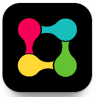
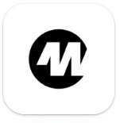
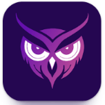
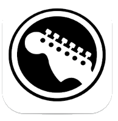

J'ai étudié quatre applications du secteur, en regardant à chaque
fois le positionnement, les fonctionnalités, la direction
artistique et les motifs d'interface employés. L'objectif n'était
pas de m'en inspirer graphiquement mais de repérer ce que personne
ne couvrait.

Radiate
Réseau social rave
- Force
- Une communauté très forte, un segment clair
- Faiblesse
-
Une UX confuse qui mêle réseau social, revente de billets et
rencontre, et beaucoup de spam
- Ce que j'en retiens
-
Ne pas empiler les fonctions. Un objet central, un seul.

Woov
Application officielle de festival
- Force
-
Une interface très propre, utile pendant l'événement, adossée
aux organisateurs
- Faiblesse
-
Peu utilisée avant l'événement, mise en relation limitée
- Ce que j'en retiens
-
Le créneau libre est en amont, pas pendant.

Festivawl
Découverte de festivals
- Force
-
Une information centralisée, une navigation simple et lisible
- Faiblesse
- Presque aucune dimension sociale
- Ce que j'en retiens
-
La clarté d'un calendrier tient à peu de choses : listes,
filtres, hiérarchie stricte.

ConcertBuddy
Trouver un compagnon de concert
- Force
- Un concept simple, entièrement centré sur la rencontre
- Faiblesse
- Un design daté, mal adapté au mobile
- Ce que j'en retiens
-
L'idée est juste, l'exécution mobile reste à faire.
Synthèse comparative des quatre applications étudiées
| Application |
Positionnement |
Social |
Logistique |
Design |
| Radiate |
Réseau social rave |
Fort |
Absent |
Flashy |
| Woov |
Application officielle de festival |
Moyen |
Moyen |
Moderne |
| Festivawl |
Découverte de festivals |
Faible |
Faible |
Minimal |
| ConcertBuddy |
Trouver un compagnon de concert |
Fort |
Absent |
Daté |
La colonne logistique est vide chez tout le monde. En revanche, les
quatre produits partagent les mêmes motifs d'interface : une page
événement centrale d'où partent les participants, la discussion,
les informations pratiques et la carte. Ce motif est un repère
connu des utilisateurs, il n'y avait aucune raison de le casser.
Décision de conception
Faire du groupe logistique l'objet central de l'application
Plutôt qu'un profil que l'on parcourt ou un fil d'actualité,
l'unité de base devient le fil : un petit groupe
qui s'organise autour d'un événement précis, avec un budget, des
places, et des étiquettes concert, trajet ou logement. La mise en
relation se fait sur la ville de départ, le mode de transport,
l'hébergement et les dates, pas sur les goûts musicaux. La page
événement reste le point d'entrée, parce que c'est le repère que
les utilisateurs connaissent déjà.